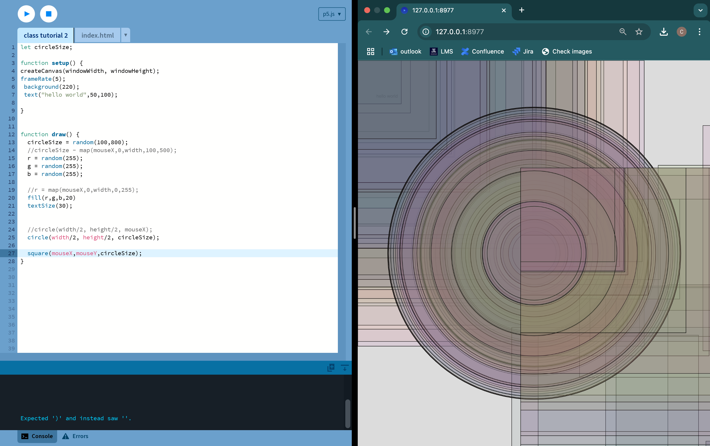

Coming straight from HTML and Javascript, it was surprising to see how much faster it took to create cool visuals. I was most impressed with how you could map function draw() to your mouse and loop a sequence of visuals. I did have to add a mechanism to stop animation at 150 shapes so that this website would not crash.
